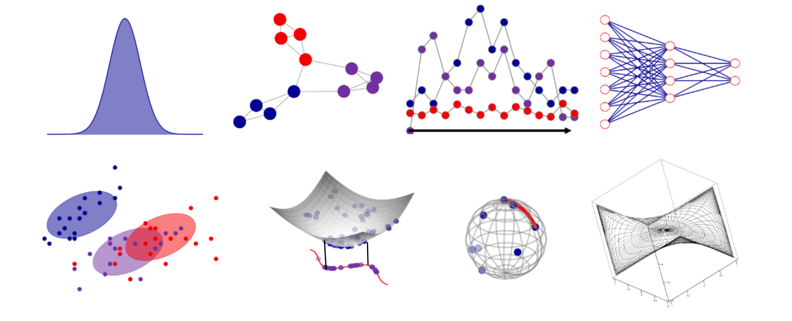

Modelling complex distributions
Model complex distributions with new optimal transport problems that go beyond classical settings.
A project of the PEPR IA
MacLeOD brings together geometric and distributional deep learning. Using optimal transport, we compare and transform complex data distributions over geometric spaces — and build the efficient algorithms and novel architectures that make it scale.

Overview
Optimal transport provides a principled way to compare and move distributions. MacLeOD develops new OT formulations for data that live on complex geometries — manifolds and graphs — together with scalable algorithms and architectures, released as open-source software for reproducibility.
Research
Model complex distributions with new optimal transport problems that go beyond classical settings.
Design efficient algorithms for processing large-scale distributions that live on manifolds.
Design deep learning architectures that encode distributions supported on manifolds.
Develop distributional geometric deep learning for graph modelling.
Analyse and interpret deep neural networks through distributions and operator theory.
Consortium
MacLeOD is led by Rémi Flamary (École Polytechnique) and Laetitia Chapel (Institut Agro Rennes-Angers), with partners across French research.